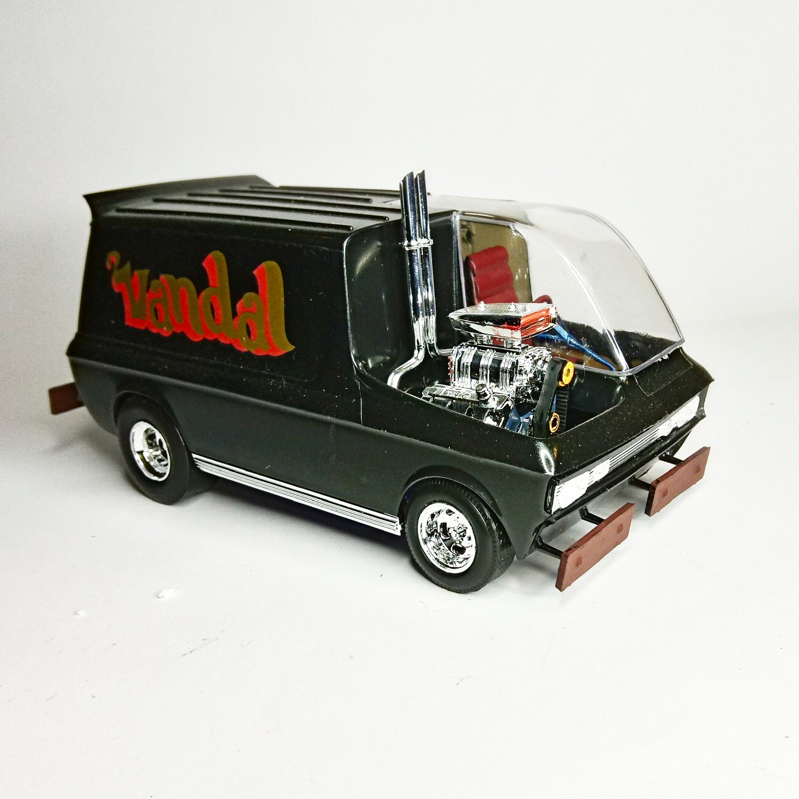
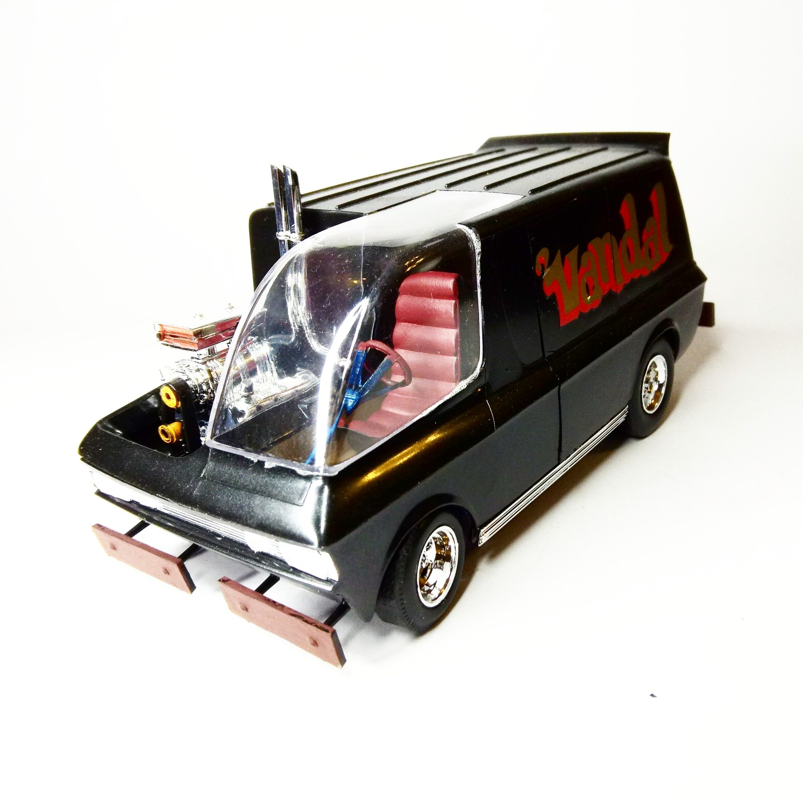
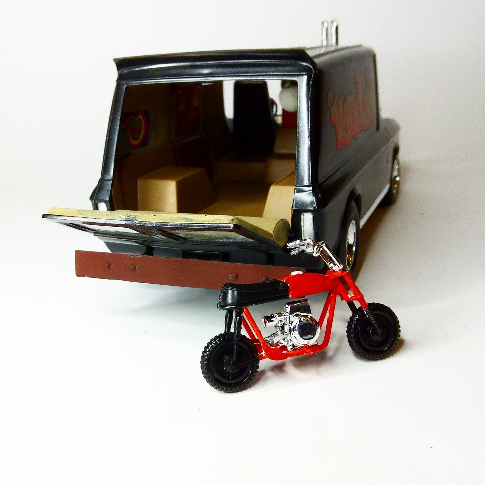
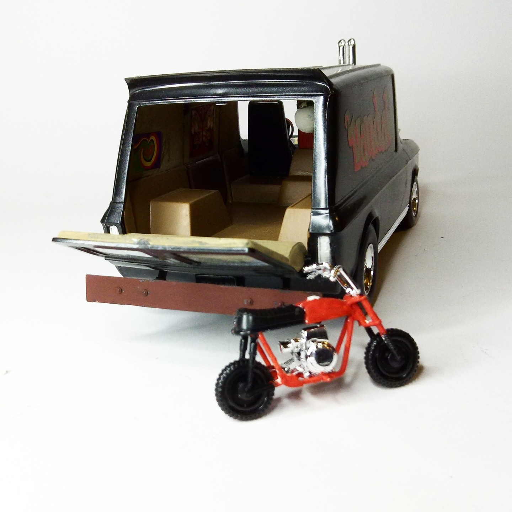

Auto e veicoli stradali · scale model archive
Vandal
Vandal — Kit: Revell, Scale: 1/24. An absolutely spiffing van design, the brainchild of that genius, Tom Daniels, a veritable triumph of both engineering…

Photo gallery



English description
An absolutely spiffing van design, the brainchild of that genius, Tom Daniels, a veritable triumph of both engineering and artistry. And, as if that weren't enough, he’s gone and included a motorbike for good measure—because, naturally, no self-respecting custom van would be complete without one, what?
#1/24 #Revell #Vandal
Descrizione italiana
Un progetto di van assolutamente splendido, nato dall’inventiva di Tom Daniels: un vero trionfo di ingegneria e fantasia. E, come se non bastasse, include anche una motocicletta, perché naturalmente nessun custom van che si rispetti sarebbe completo senza.